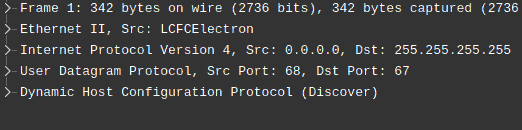

I moved to the Redeer C2, community edition with Sailfish OS. Not 100% voluntarily,
but not against my will either. My phone's touch screen just broke, and I needed a
replacement.
I still think that Sailfish OS is a nice system, and its user interface is the only
mobile Linux UI that is customer-ready. Unfortunately, the system lacks many common
applications, such as a video player (the music player exists and is okay for my
needs) or a YouTube client. So my plan was to download videos with yt-dlp and view \
them locally.
Part 1: yt-dlp Python
What could be simpler than downloading and running yt-dlp from
github or installing from pip? But
my phone only had Python 3.8 (python3-base-3.8.18) and yt-dlp dropped support for it
almost a year ago (#1132).
I was not looking for an easy way, so I decided to cross-compile python myself. But
I was not looking for a dirty way either, so I decided to create an RPM package that
could be installed independently from the original Python and removed later if
needed.
Building and packaging
Let's assume you have already followed the
Sailfish SDK installation instructions
and have sfdk installed. Make sure to do all the stuff within a workspace,
because Sailfish SDK uses a VirtualBox VM or Docker container as a build host and
mounts workspace directory there.
include(`2025-08-07/sfdk-config.txt')
That should be enough: a somewhat optimized, somewhat stripped, complete python
distribution ready for common tasks including downloading youtube videos with
yt-dlp.
include(`2025-08-07/python-3.13.6.spec')
The RPM spec unpacks, compiles, and prepares a large package
Part 2: yt-dlp
With the latest stable Python and pip, it's enough to just install it from pip:
MAX messenger is a government-forced Russian messenger that is planned to replace
WhatsApp, Facebook messenger and other Western propaganda spreading machines. And
the Telegram too. While there is nothing interesting about the interface, there
could be something interesting inside so I installed the app on my Android emulator
and started to explore it.
TL;DR
Nothing unexpected, yet another messenger with an unclear future. Not a KGB trojan
surveillance app, just as private as any other messenger which is not focused on
protecting your data. It also needs a working phone number to register, so you can
forget about anonymity.
The only somewhat interesting thing is that it has a TamTam messenger inside, so
it's probably based on a TamTam codebase.
Package details
Version information
Origin
RuStore
Package
ru.oneme.app
Version
25.7.1
Package content
d88c78a92d75f0319af1a95b59e3867e
23M
base.apk
7ef573467d338b6411ceb80cd278f9cb
2.8M
split_config.mdpi.apk
0d978dc58e071136cddc8a815311154f
209K
split_config.ru.apk
b3c75d266a1f1a55833cb9f052b9e075
26M
split_config.x86_64.apk
Permissions
Like any other messenger, it can read and write media and storage, use camera and
microphone, prevent device lock, use vibration or show full screen intents, update app
badges and settings on different android-based platforms.
The messenger uses open source libraries, some of them are well known and widely used
in Java (Apache commons, Apache http, FasterXML, org/JSON, LZ4-java, OkHTTP3, WebRTC,
etc). The list below contains specific or not so famous libraries:
Library
Description
Sources
Odnoklassniki (ru/ok)
android
A somewhat lower-level code (api, http, compression, etc)
N/A
messages
Reused code from OK.ru messenger
onechat
Utility classes for the reactions view
tamtam
Some Russian messenger
tracer
OK-Tech service for profiling and failure reporting, closed source.
At least, I need to make a note on how to use openconnect even without gui. Sailfish
has an openconnect client by default, but it doesn't have default vpn scripts:
# openconnect https://somehost.com/?somekey
...
/bin/sh: /etc/openconnect/vpnc-script: not found
Script '/etc/openconnect/vpnc-script' returned error 127
/bin/sh: /etc/openconnect/vpnc-script: not found
Script '/etc/openconnect/vpnc-script' returned error 127
...
But ones from the
OpenConnect's git repository
work well and copying them to /etc/openconnect directory solves an issue. Of course, if
you don't want to put self generated files to the system directories, you can set the
script location:
Good thing that it works by itself, bad thing that it is not integrated with the UI,
so I had to try other options:
Automatic cookie
I expected that it will fetch the cookie and certificate from credentials, but it
didn't work, I kept getting those getaddrinfo error messages.
Manual cookie
If connman cannot fetch the cookie, I should do it myself:
include(`2025-07-03/openconnect-logs.txt')
And it worked! Just pay attention when copy-pasting text from the fingerterm, as it
will add spaces where the text was broken by the side of the screen.
I'm one of the rare owners of a Sailfish OS device. I had an original Jolla, a Sony
XPeria device with Sailfish and now I use Redeer C2. For me it is an only end-user
ready Linux mobile OS-es, but one thing kept bothering me - an OpenVPN (ocserv)
connection to my home network.
The problem was unclear: VPN connection kept flashing while trying to connect but
each attempt ended with "Connection problem" error. No notifications, no detailed
error messages. What is wrong with you? It worked on Android with the AnyConnect
client, it worked on a generic Linux with terminal client for "openconnect". And
the terminal client worked well even on the same Sailfish OS. What could be wrong?
Ok. Let's look in the logs:
[root@JollaC2 defaultuser]# journalctl -r | grep -i vpn
...
JollaC2 connman-vpnd[2317]: Failed to open HTTPS connection to my-vpn.somevds.ch/?somesecretkey
JollaC2 lipstick[2684]: [D] unknown:0 - VPN connection property changed: "State" QVariant(QString, "configuration") "/net/connman/vpn/connection/https___my_vpn_somevds_ch__somesecretkey_Sailfish OS_org" "Home"
JollaC2 connman-vpnd[2317]: getaddrinfo failed for host 'my-vpn.somevds.ch/?somesecretkey': Name or service not known
JollaC2 connman-vpnd[2317]: POST https://my-vpn.somevds.ch/?somesecretkey
...
The culprit! It thinks that my whole url with a path and a parameter. A bit weird,
because my OpenConnect server uses camouflage mode and I don't want to disable it,
but connman doesn't know how to use it. I'll try to find a workaround next time.
I bought a Banana Pi BPI-R3 router, installed an OpenWRT firmware, but couldn't get
an IP address from my provider, green.ch. I tried to use the same MAC address, but
it didn't work so I had to go deeper and what is the simplest way to debug such an
issue? Compare the dumps and see the difference, of course. So I connected WAN port
of a working router to my laptop and looked at DHCP packets, then I did the same for
my non-working router and saw a difference:
Working DHCP request

Ignored DHCP request
So, the only difference was that the provider expected packet to be sent from a
802.1q vlan with ID 10. I've added it to the network config (/etc/config/network)
and everything worked.